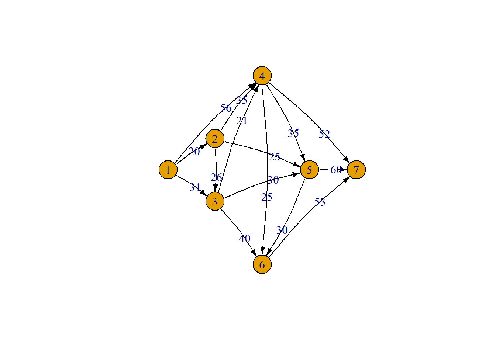
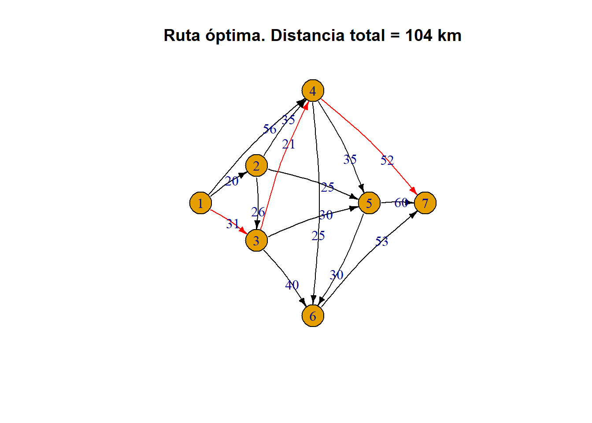

Una empresa de mensajería debe enviar, por vía terrestre, mercancía desde una ciudad A hasta una ciudad B. Hay diferentes rutas y ciudades intermedias por las que se puede pasar en el camino desde A hasta B. La siguiente matriz muestra la distancia (en km) entre las ciudades conectadas.
Podemos representar el problema a través de una red, donde cada ciudad es un nodo y cada posible conexión o camino entre ciudades se representa con un arco o arista.
# Cargar paquete para trabajar con redes en R (hay varios más)library(igraph) nod <-1:7# se define el conjunto de nodos (7 ciudades en este caso)# Hay varias formas de construir la red. Una es con una lista de arcos o aristasedges_list <-c(1,2,1,3,1,4,2,3,2,4,2,5,3,4,3,5,3,6,4,5,4,6,4,7,5,6,5,7,6,7)# Se pueden agregar atributos a las aristas: Distancia o costo, para el ejemploedges_cost <-c(20, 31, 56, 26, 35, 25, 21, 30, 40, 35, 25, 52, 30, 60, 53)# se construye un objeto donde se guarda la información de la redg1 <- igraph::graph(edges = edges_list) E(g1)$w <- edges_cost # Se agregan atributos a las aristas# Posición relativa de los nodos de la red (para a gráfica)pos_m <-matrix(c(0,0, 1,1, 1,-1, 2,3, 3,0, 2,-3, 4,0), byrow = T, ncol =2)# Graficar redplot(g1, layout = pos_m, vertex.size =20, edge.curved =0.1, edge.arrow.size =0.5, edge.color ="black", edge.label = edges_cost)

3.3 Rutas
¿Cuántas rutas posibles hay entre los nodos (ciudades) 1 y 7?
Hay en total 24 rutas (¿Por qué? ). La lista completa de rutas y distancias es:
# construye todas las rutas posibles entre los nodos # especificados en la red "g1"rutas <-all_simple_paths(g1, from =1, to =7) # Calculamos la distancia total para cada una de las rutas posiblesall.distances <-vector()for(i in1:length(rutas)){ all.distances[i] =sum(E(graph = g1, path = rutas[[i]], directed = T)$w)}# Guardamos los resultados en una tablaexhaustiva <-data.frame(Ruta =as.character(rutas), Distancia = all.distances)
N
Ruta
Distancia
1
1:7
185
2
c(1, 2, 3, 4, 5, 7)
162
3
c(1, 2, 3, 4, 6, 7)
145
4
c(1, 2, 3, 4, 7)
119
5
c(1, 2, 3, 5, 6, 7)
159
6
c(1, 2, 3, 5, 7)
136
7
c(1, 2, 3, 6, 7)
139
8
c(1, 2, 4, 5, 6, 7)
173
9
c(1, 2, 4, 5, 7)
150
10
c(1, 2, 4, 6, 7)
133
11
c(1, 2, 4, 7)
107
12
c(1, 2, 5, 6, 7)
128
13
c(1, 2, 5, 7)
105
14
c(1, 3, 4, 5, 6, 7)
170
15
c(1, 3, 4, 5, 7)
147
16
c(1, 3, 4, 6, 7)
130
17
c(1, 3, 4, 7)
104
18
c(1, 3, 5, 6, 7)
144
19
c(1, 3, 5, 7)
121
20
c(1, 3, 6, 7)
124
21
c(1, 4, 5, 6, 7)
174
22
c(1, 4, 5, 7)
151
23
c(1, 4, 6, 7)
134
24
c(1, 4, 7)
108
3.4 Ruta más corta
La ruta más corta para ir desde A hasta B es c(1, 3, 4, 7), con una distancia total de 104 km.
El método usado para resolver el problema es el de enumeración exhaustiva, donde se listan todas las posibles soluciones y se compara la función objetivo en cada una de ellas (piense en alternativas o algoritmos que no requieran de enumerar o listar todas las posibles soluciones).
Este pequeño ejemplo, muestra la naturaleza combinatoria de los problemas de redes.
La red con la ruta óptima es:
# Se construye un vector de colores (un atributo) para las aristased.color <-rep("black", 15)# Se pone un color diferente para las aristas en la ruta óptimaed.color[c(2,7,12)] <-"red"# Se grafica la redplot(g1, layout = pos_m, vertex.size =20, edge.curved =0.1, edge.arrow.size =0.5, edge.color = ed.color, edge.label = edges_cost,main ="Ruta óptima. Distancia total = 104 km")

3.5 Planteamiento como modelo de Programación Lineal
Es posible plantear un modelo de programación matemática (lineal) para abordar el problema de ruta más corta.
\(c_{ij}:\) Costo del arco \((i,j)\), donde \((i,j) \in \mathcal{A}\)
\(b_i:\)Oferta2 del nodo \(i\), donde \(i \in \mathcal{N}\)
1 Es común identificar al nodo de inicio y final con alguna letra, por ejemplo: \(s\), nodo inicial; \(f\), nodo final
2 Este parámetro se puede utilizar para generalizar la modelación. Para el nodo de inicio o salida (\(s\)) tendremos una oferta de 1 (imagine que el nodo oferta una salida sin recibir ninguna entrada); para el nodo final o de llegada (\(f\)) la oferta es de -1 (hay una entrada pero ninguna salida de este nodo); todos los nodos intermedios, tienen una oferta de 0. A esto también suele llamársele ecuación de balance